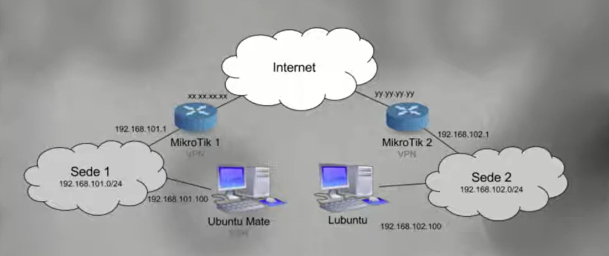

Práctica 8.1: VPN Sitio a Sitio (Site-to-Site) con IPsec en MikroTik RouterOS
Datos de la Práctica
- Módulo: Seguridad y Alta Disponibilidad (SAD - 0378)
- Unidad Didáctica: UD8 - Seguridad perimetral: Acceso remoto y Redes Privadas Virtuales (VPN)
- Entorno de trabajo: Emulador de red GNS3 con las siguientes máquinas y appliances:
- Router MikroTik CHR 1 (Sede 1): Conecta la red interna
192.168.1.0/24a Internet. - Router MikroTik CHR 2 (Sede 2): Conecta la red interna
192.168.2.0/24a Internet. - Clientes VPCS: Nodo
PC1en Sede 1 (192.168.1.10) y nodoPC2en Sede 2 (192.168.2.10). - Nube / Switch WAN (Internet): Conecta las interfaces públicas de ambos routers en la subred WAN compartida.
- Router MikroTik CHR 1 (Sede 1): Conecta la red interna
- Archivos descargables del laboratorio:
- Proyecto guiado inicial: VPNconIPsec_escenario.gns3project
- Proyecto del reto de evaluación: VPNconIPsec_tarea.gns3project
1. Objetivos
- Diseñar e implementar en GNS3 un túnel de Red Privada Virtual Sitio a Sitio (Site-to-Site VPN) utilizando el estándar IPsec en Modo Túnel con encapsulación ESP entre dos routers MikroTik RouterOS.
- Comprender la secuencia de configuración del protocolo IKE en versiones modernas de RouterOS:
- Peers: Definición de los interlocutores remotos y parámetros de la Fase 1 (IKE SA).
- Identities: Mecanismo de autenticación mutua mediante clave precompartida (Pre-Shared Key - PSK).
- Policies: Definición de los selectores de tráfico de la Fase 2 (IPsec SA) y activación del modo túnel.
- Identificar y solucionar la interferencia entre la traducción de direcciones (Source NAT / Masquerade) y el cifrado IPsec mediante directivas de exclusión o bypass de NAT (NAT Bypass / Accept).
- Auditar el túnel analizando las asociaciones de seguridad activas (Installed SAs) y verificando el incremento de los contadores de paquetes y bytes cifrados.
- Capturar y examinar el tráfico en tránsito sobre el enlace WAN con Wireshark, comprobando la total ilegibilidad de las comunicaciones internas y la presencia de datagramas ESP (Protocolo IP 50).
- Exportar las copias de seguridad de la configuración (
.backup) para su entrega y validación docente.
2. Escenario y Fundamentos Técnicos
En este laboratorio simularemos la interconexión segura de dos sedes corporativas de una empresa (Sede 1 y Sede 2) separadas geográficamente y conectadas a través de una red pública no confiable (Internet):

El Flujo de Cifrado y Desencapsulado
Cuando un equipo de la Sede 1 (PC1) envía un paquete de datos hacia un servidor de la Sede 2 (PC2):
PC1envía un paquete IP estándar con origen192.168.1.10y destino192.168.2.10a su puerta de enlace (MikroTik 1).MikroTik 1evalúa sus políticas IPsec (Policies). Al comprobar que el tráfico coincide con el selector (192.168.1.0/24 → 192.168.2.0/24), no envía el paquete directamente a Internet ni le aplica enmascaramiento NAT ordinario.- El router cifra el paquete completo mediante el protocolo ESP (AES-128 / SHA-256), le añade la cabecera de seguridad y le antepone una nueva cabecera IP pública con origen en su propia IP WAN y destino en la IP WAN de
MikroTik 2. - El paquete viaja por Internet como un datagrama seguro. Cualquier nodo intermedio solo puede ver las direcciones públicas de los routers y el protocolo ESP (50); el contenido interno es completamente invisible e inmune a manipulaciones.
- Al recibirlo,
MikroTik 2descifra el paquete, verifica su código de autenticación HMAC y entrega el paquete original en la red local de la Sede 2 para que llegue aPC2.
3. Topología y Direccionamiento en GNS3
El laboratorio modela el entorno de trabajo según el siguiente esquema de red en GNS3:


Tabla de Direccionamiento IP del Laboratorio
| Nodo / Dispositivo | Interfaz | Dirección IP | Máscara | Puerta de Enlace (GW) | Rol en la Topología |
|---|---|---|---|---|---|
| MikroTik 1 (Sede 1) | ether1 (WAN) |
DHCP / 192.168.122.10 |
/24 |
virbr0 (192.168.122.1) |
Conexión externa a Internet WAN. |
| MikroTik 1 (Sede 1) | ether2 (LAN) |
192.168.1.1 |
/24 |
-- | Puerta de enlace por defecto de la Sede 1. |
| PC1 (VPCS Sede 1) | eth0 |
192.168.1.10 |
/24 |
192.168.1.1 |
Estación cliente de la Sede 1. |
| MikroTik 2 (Sede 2) | ether1 (WAN) |
DHCP / 192.168.122.20 |
/24 |
virbr0 (192.168.122.1) |
Conexión externa a Internet WAN. |
| MikroTik 2 (Sede 2) | ether2 (LAN) |
192.168.2.1 |
/24 |
-- | Puerta de enlace por defecto de la Sede 2. |
| PC2 (VPCS Sede 2) | eth0 |
192.168.2.10 |
/24 |
192.168.2.1 |
Estación cliente de la Sede 2. |
Credenciales por defecto del Laboratorio
- Usuario de RouterOS:
admin - Contraseña de RouterOS:
admin(en ambos routers). - Secreto compartido del túnel (Pre-Shared Key / Secret):
admin
4. Desarrollo Paso a Paso de la Práctica
Fase 1: Despliegue del Escenario y Verificación de Conectividad Base
-
Apertura del Proyecto:
- Inicia GNS3 y abre el proyecto preconfigurado VPNconIPsec_escenario.gns3project.
- Inicia todos los dispositivos del laboratorio.
-
Verificación de la Conexión WAN:
- Accede a la consola de
MikroTik 1y comprueba su IP en la interfazether1: - Haz ping desde
MikroTik 1a la IP deether1deMikroTik 2y a la puerta de enlace de Internet (192.168.122.1). Debe responder con éxito.
Aviso importante sobre la ruta por defecto en RouterOS
Si en algún momento eliminas la IP pública asignada por DHCP a
ether1o desactivas el cliente DHCP (/ip dhcp-client), RouterOS eliminará automáticamente la ruta por defecto hacia Internet. En tal caso, el router quedará incomunicado en la WAN. Si te ocurre, añade manualmente la ruta por defecto en consola: - Accede a la consola de
-
Verificación del Aislamiento Inicial:
- Abre la consola de PC1 e intenta hacer ping a PC2:
- Comprobarás que el ping falla por completo (tiempo de espera agotado). Aunque ambos routers tienen salida a Internet, la red pública no enruta direcciones privadas
192.168.X.Xy aún no hemos construido el túnel IPsec.
Fase 2: Configuración del Túnel IPsec en MikroTik 1 (Sede 1)
Vídeo de Apoyo: Configuración de VPN con IPsec en MikroTik
Puedes seguir la explicación en vídeo del profesor Román Carceller en el siguiente enlace:
Diferencias de interfaz en versiones modernas de RouterOS (WebFig)
En versiones antiguas de RouterOS los parámetros de Peer e Identity estaban unificados. A partir del minuto 3:14 del vídeo, debes seguir los pasos en el orden exacto que se detalla a continuación para configurar correctamente las pestañas Peers, Identities y Policies.
Accede a WebFig de MikroTik 1 introduciendo en tu navegador la dirección IP de su interfaz WAN (o gestionándolo desde un cliente web en la LAN).
Paso 1: Creación del Peer (Fase 1 - IKE SA)
- En el menú lateral de WebFig, navega a IP → IPsec.
-
Selecciona la pestaña Peers y pulsa Add New:

-
Configura los siguientes parámetros:
- Name:
peer_sede2 - Address: Introduce la dirección IP pública / WAN de MikroTik 2 (por ejemplo,
192.168.122.20o la IP que tenga asignada enether1). - Profile:
default - Exchange Mode:
ike2omain (ikev1) - Deja el resto de opciones por defecto y pulsa OK.

- Name:
Paso 2: Creación de la Identity (Autenticación mutua con PSK)
-
Dentro de IP → IPsec, haz clic en la pestaña Identities y pulsa Add New:

-
Completa los campos:
- Peer: Selecciona el peer recién creado:
peer_sede2. - Auth. Method:
pre shared key. - Secret: Introduce la clave compartida acordada:
admin. - Pulsa OK.

- Peer: Selecciona el peer recién creado:
Paso 3: Creación de la Policy (Fase 2 - Selectores de Tráfico y Modo Túnel)
-
Ve a la pestaña Policies dentro de IP → IPsec y pulsa Add New:

-
Configura los parámetros que definirán qué tráfico debe entrar al túnel:
- Peer: Selecciona
peer_sede2. - Tunnel: Marca la casilla Tunnel (activa el Modo Túnel de IPsec).
- Src. Address: Introduce la subred local de la Sede 1:
192.168.1.0/24. - Dst. Address: Introduce la subred remota de la Sede 2:
192.168.2.0/24. - Action:
encrypt. - Proposal:
default. - Pulsa OK.

- Peer: Selecciona
Paso 4: Directiva de Exclusión de NAT (NAT Bypass)
¡El error más común en despliegues IPsec!
Por defecto, MikroTik aplica una regla de enmascaramiento (masquerade) en IP → Firewall → NAT para todo el tráfico saliente por ether1. Si un paquete con origen 192.168.1.10 sale hacia 192.168.2.10, el cortafuegos cambiará su IP de origen por la IP pública de ether1 antes de que la política IPsec pueda capturarlo, provocando que el túnel falle.
Debemos indicarle al cortafuegos que no aplique NAT al tráfico que viaje entre ambas sedes privadas:
-
Ve a IP → Firewall → NAT y pulsa Add New:

-
Define los selectores del tráfico inter-sedes:
- Chain:
srcnat - Src. Address:
192.168.1.0/24(Subred local Sede 1) - Dst. Address:
192.168.2.0/24(Subred remota Sede 2) - Action:
accept(indica que el paquete se acepta tal cual, sin alterar su cabecera ni enmascararlo). - Comment: Bypass NAT para tunel IPsec hacia Sede 2.
- Pulsa OK.

- Chain:
-
¡Orden de evaluación indispensable!:
- Arrastra la nueva regla con el ratón y sitúala en la primera posición de la lista (posición 0), por encima de la regla general de
masquerade:

- Arrastra la nueva regla con el ratón y sitúala en la primera posición de la lista (posición 0), por encima de la regla general de
Fase 3: Configuración Simétrica en MikroTik 2 (Sede 2)
Para que el túnel sea operativo, debemos replicar de forma simétrica e invertida la misma configuración en el router de la Sede 2 (MikroTik 2):
- Peer en MikroTik 2:
- IP → IPsec → Peers → Add New
- Name:
peer_sede1 - Address: Introduce la IP WAN de MikroTik 1 (ej.
192.168.122.10). - Profile:
default
- Identity en MikroTik 2:
- IP → IPsec → Identities → Add New
- Peer:
peer_sede1 - Auth. Method:
pre shared key - Secret:
admin(debe ser estrictamente idéntico al configurado en MikroTik 1).
- Policy en MikroTik 2:
- IP → IPsec → Policies → Add New
- Peer:
peer_sede1 - Tunnel: Marcado (
yes). - Src. Address:
192.168.2.0/24(Subred local Sede 2). - Dst. Address:
192.168.1.0/24(Subred remota Sede 1). - Action:
encrypt
- Bypass de NAT en MikroTik 2:
- IP → Firewall → NAT → Add New
- Chain:
srcnat| Src. Address:192.168.2.0/24| Dst. Address:192.168.1.0/24| Action:accept - Comentario: Bypass NAT para tunel IPsec hacia Sede 1.
- Ubica la regla en la primera posición (posición 0), por encima del masquerade.
Fase 4: Auditoría, Verificación y Captura con Wireshark
-
Comprobación de Conectividad Extremo a Extremo:
- Abre la consola de PC1 y lanza un ping hacia PC2:
- El primer paquete puede sufrir un ligero retardo mientras se completa la negociación IKE. A continuación, los paquetes deben responder con 100% de éxito.
- Realiza la prueba inversa desde PC2 hacia PC1 (
ping 192.168.1.10).
-
Auditoría de Asociaciones de Seguridad (SAs) en RouterOS:
- En WebFig de cualquiera de los routers, accede a IP → IPsec:
- Pestaña Active Peers: Comprueba que el estado del peer remoto se encuentra en
established. - Pestaña Installed SAs: Observa que aparecen dos SAs activas (una de entrada y otra de salida) con su respectivo SPI, el algoritmo criptográfico utilizado (
aes-cbcoaes-gcm) y los contadores de paquetes y bytes incrementándose en tiempo real conforme se envían datos.
- Pestaña Active Peers: Comprueba que el estado del peer remoto se encuentra en
- En WebFig de cualquiera de los routers, accede a IP → IPsec:
-
Demostración de Seguridad con Wireshark:
- En GNS3, haz clic derecho sobre el enlace Ethernet que conecta
MikroTik 1con el switch WAN de Internet y selecciona Start Capture. - Se abrirá Wireshark monitorizando el tráfico que viaja por la red pública.
- Vuelve a la consola de PC1 y ejecuta un ping continuo hacia PC2:
- ¡Comprobación crítica en Wireshark!:
- Filtra en Wireshark por
icmp. Observarás que no se captura absolutamente ningún paquete ICMP. - Filtra por
espo borra el filtro: observarás una ráfaga de paquetes cuyo protocolo es ESP (Protocol 50) entre las IPs públicas192.168.122.10y192.168.122.20. - Selecciona cualquiera de estos paquetes y expande su árbol en la ventana central: los datos viajan totalmente cifrados (Encapsulating Security Payload), demostrando que un espía en Internet es incapaz de interceptar el contenido o identificar los equipos internos que se comunican.
- Filtra en Wireshark por
- En GNS3, haz clic derecho sobre el enlace Ethernet que conecta
-
Generación de Respaldos de Configuración:
- En
MikroTik 1: Ve a Files → Backup, nombra el archivo comoMikroTik1.backupy pulsa Backup. Descarga el archivo a tu máquina anfitriona. - En
MikroTik 2: Repite la operación y descargaMikroTik2.backup.
- En
5. Cuestiones y Análisis Técnico
Responde de forma justificada en tu memoria técnica a las siguientes cuestiones:
- La Interferencia del NAT con las Políticas IPsec:
- Explica detalladamente por qué es indispensable situar la regla
chain=srcnat src=192.168.1.0/24 dst=192.168.2.0/24 action=acceptantes de la regla general demasquerade. ¿Qué le sucedería al paquete en la interfaz WAN si dicha regla no existiera o estuviera colocada por debajo?
- Explica detalladamente por qué es indispensable situar la regla
- Modo Túnel vs Modo Transporte:
- Al configurar la política marcamos la casilla
Tunnel=yes. ¿Qué diferencia estructural existe entre las cabeceras de red generadas en este modo y las que se habrían generado si hubiéramos operado en Modo Transporte? ¿Habría sido viable el Modo Transporte en este escenario?
- Al configurar la política marcamos la casilla
- Visibilidad en Tránsito y Análisis de Tráfico:
- A partir de la captura obtenida con Wireshark en la WAN, detalla qué información puede deducir un atacante que intercepte la comunicación en Internet y qué información le queda completamente vedada gracias a la encapsulación ESP.
- Mecanismos de Autenticación y Escalabilidad:
- En esta práctica hemos utilizado una contraseña precompartida (Pre-Shared Key
admin). Si tuvieras que diseñar la red de una multinacional con 100 delegaciones remotas, ¿qué problemas de gestión y seguridad plantearía mantener claves PSK y qué alternativa basada en PKI implementarías?
- En esta práctica hemos utilizado una contraseña precompartida (Pre-Shared Key
6. Entregables
Presenta un único documento en formato PDF junto con los archivos de configuración:
- Archivos de Configuración de RouterOS:
MikroTik1.backup(Copia de seguridad del router de la Sede 1).MikroTik2.backup(Copia de seguridad del router de la Sede 2).
- Memoria Técnica en PDF conteniendo:
- Datos del alumno: Nombre y apellidos, módulo SAD y fecha.
- Topología GNS3: Captura de pantalla de la red en ejecución con las etiquetas de direccionamiento visibles.
- Evidencias de Configuración:
- Captura de pantalla en WebFig de IP → IPsec → Peers, Identities y Policies de ambos routers.
- Captura de pantalla de la tabla IP → Firewall → NAT mostrando la regla de bypass en primera posición.
- Captura de la pestaña Installed SAs evidenciando las asociaciones de seguridad establecidas y el tráfico cursado.
- Evidencia de Conectividad y Cifrado:
- Captura de la terminal de
PC1realizando ping exitoso aPC2(192.168.2.10). - Captura de pantalla de Wireshark en la WAN demostrando la presencia de tráfico ESP (protocolo 50) y la ausencia de texto claro o tramas ICMP.
- Captura de la terminal de
- Cuestiones Técnicas: Respuestas completas y argumentadas a las cuatro cuestiones del apartado 5.